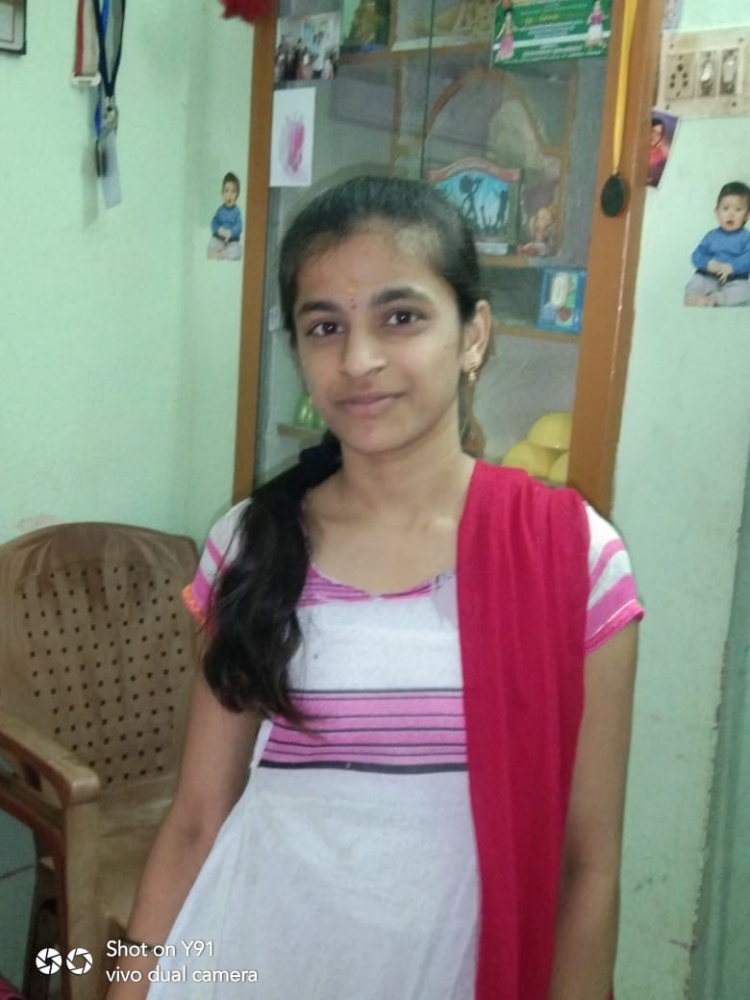

Nandini Gubala | Portfolio
Hi, I'm
Nandini Gubala
Java Full Stack Intern
Eager to build real-world solutions using Java, SQL, and Web Technologies.
Hire Me
See Projects

Skills
Programming:
Core Java, SQL, OOPs concepts
Web Technologies:
HTML, CSS, JavaScript
Tools:
MySQL, Oracle
Internship
Java Full Stack Intern – Dhee Coding Lab, Bangalore (Mar 2025)
Implemented backend logic using
Core Java
with key features like
OOPs, Collections, Exception Handling,
and
Multithreading
.
Connected to
relational databases (MySQL/Oracle)
to build and optimize queries.
Worked on web components using
HTML, CSS, and JavaScript
for frontend development.
Collaborated with senior developers in Agile-based teams and participated in daily stand-ups.
Developed REST APIs and performed unit testing to validate functionality.
Projects
1. Real-Time CCTV Video Analysis Using Deep Learning
Designed and implemented an automated surveillance system using
YOLOv4
,
SSD
, and
Faster R-CNN
.
Used
OpenCV
and
TensorFlow
for video analysis and object detection.
Trained on a custom dataset of
8327 images
to improve model accuracy.
Applied
confusion class filtering
to reduce false positives.
2. Student Management System (Mini Project)
Built a CRUD-based student management system using
Java and MySQL
.
Implemented features to add, edit, delete, and view student data.
Used
JDBC
for connecting Java application to the MySQL database.
Followed MVC architecture and implemented exception handling for robustness.
3. Portfolio Website (This Website)
Designed a personal portfolio using
HTML, CSS
, and
responsive design principles
.
Showcases resume, projects, skills, and certifications in a user-friendly format.
Inspired by modern frontend UI layouts with a black background theme.
Education
B. Tech (2021-2025)
– 84.7%
Srinivasa Institute of Technology and Science, Andhra Pradesh
Intermediate (2019-2021)
– 96.6%
Medha Junior College, Andhra Pradesh
X Grade (2018-2019)
– 100.0%
Sri Sai High School, Andhra Pradesh
Certifications
Machine Learning with Python – IBM
Introduction to Embedded Systems – NPTEL
Awards
Silver Medalist – IIT Event at School Level
Pratibha Award – SSC Topper, Govt. of Andhra Pradesh (May 2019)